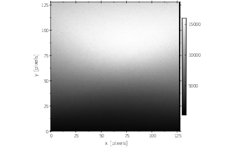
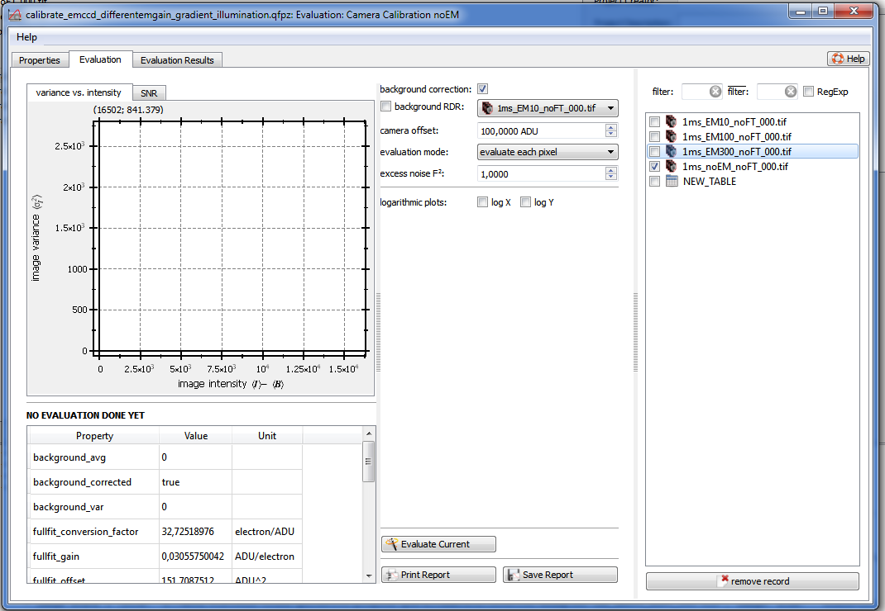
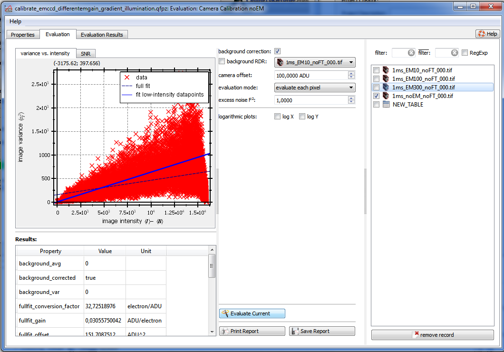
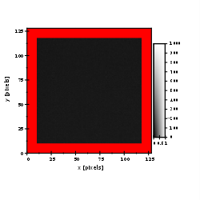
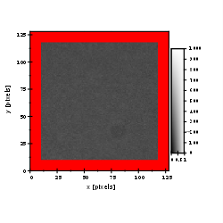
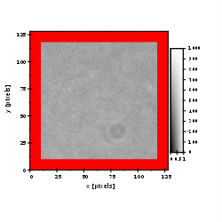
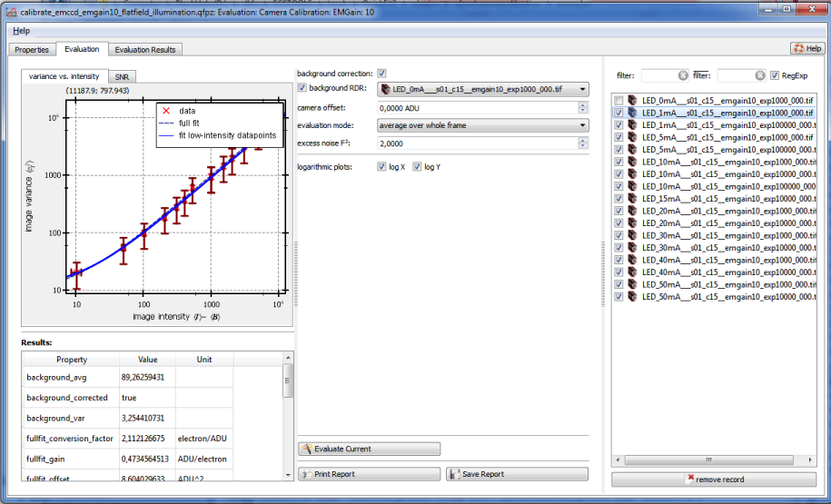

$$qf_commondoc_header.start$$ $$qf_commondoc_header.end$$
Data/Preliminaries
$$startbox_note$$
Two sets of example data are distributed together withz QuickFit in the folder $$plugin_info:examplesdir:eval_cameracalibration$$. These files are available:
- 1ms_EMxx_noFT_000.tif are files with an intensity gradient, acquired on an EMCCD camera (Andor iXon X3 860) with the given EMGain (xx) setting. No background frame is available, but the offset by the camera is approximately 100.
- LED_yymA___s01_c15__emgain10_expzzzz_000.tif are flat-field exposures (please mask the border!!!) at different LED intensities (yy) and exposure times (zzzz). The EM-Gain of the Andor iXon X3 860 EMCCD camera was set to 10. The background intensity has intensity yy=0!
$$endbox$$
Tutorial: Gradient acquisitions
Load frames
- Acquire image stacks (TIFF-files) on your camera, where the sensor is illuminated with a gradient at different camera settings. Also acquire a background frame without illumination (not present in the test data). Acquire >10 frames for each stack:

- Load the image stacks into the project, by clicking Data Items | Insert Raw Data | image stacks | single-file image stacks and selecting the acquired stacks. If you want to use the example data (see above), select the files 1ms_EMxx_noFT_000.tif
- Add a camera calibration evaluation object for every camera setting, by clicking on Data Items | Insert Evaluation | Camera Calibration. After double-clicking on one of the new evaluation items, the calibration editor will open:

Evaluation
- In the list on the right, check all files, that should be evaluated (they all have to be acquired with the same camera settings).
- If you have a background file, check background RDR and select the according RDR. If you don't ahve a background file, set camera offset to the offset, that is added by the camera (see e.g. datasheet). For the example files of this plugin, choose the second option and set the camera offset to 100.
- Choose the evaluation mode: evaluate each pixel
- If you used an EM-gain (or another stochastic gain mechanism), set the excess noise to 2, otherwise to 1
- make sure, background correction is checked.
- Click on Evaluate Current, which will evaluate the data and display the results.
After evaluation, the results are displayed in the window:

Tutorial: Flat-field acquisitions
Load frames
-
- Acquire image stacks (TIFF-files) on your camera, where the sensor is illuminated with a constant intensity, that does not change over the sensor (e.g. using an integrating sphere). Also acquire a background frame without illumination (not present in the test data). Acquire >10 frames for each stack:

- Load the image stacks into the project, by clicking Data Items | Insert Raw Data | image stacks | single-file image stacks and selecting the acquired stacks. If you want to use the example data (see above), select the files LED_yymA___s01_c15__emgain10_expzzzz_000.tif
- Add a camera calibration evaluation object (one for every camera setting), by clicking on Data Items | Insert Evaluation | Camera Calibration. After double-clicking on one of the new evaluation items, the calibration editor will open:

Evaluation
- In the list on the right, check all files, that should be evaluated (in the plugin example files you should check all files, except the background frame LED_0mA___s01_c15__emgain10_exp1000_000.tif).
- If you have a background file, check background RDR and select the according RDR (LED_0mA___s01_c15__emgain10_exp1000_000.tif for the example data). If you don't have a background file, set camera offset to the offset, that is added by the camera (see e.g. datasheet).
- Choose the evaluation mode: average over whole frame
- If you used an EM-gain (or another stochastic gain mechanism), set the excess noise to 2, otherwise to 1
- make sure, background correction is checked.
- Click on Evaluate Current, which will evaluate the data and display the results.
After evaluation, the results are displayed in the window:
